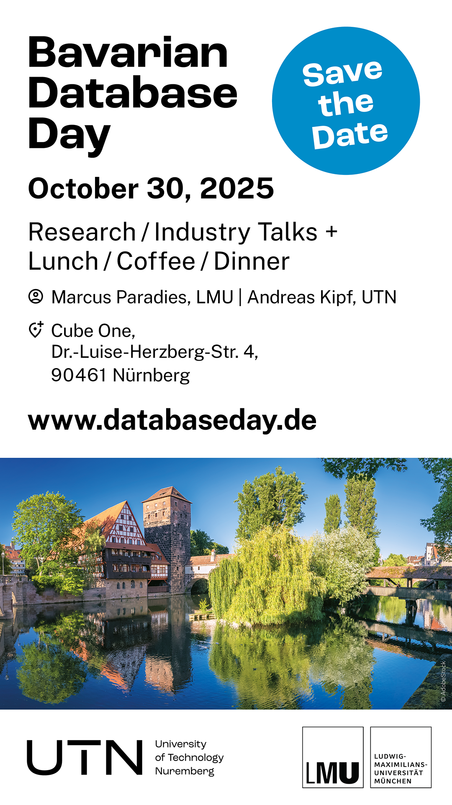

Bavarian Database Day 2025
Research / Industry Talks / Networking
October 30, 2025
Welcome to the first edition of the Bavarian Database Day to be held on October 30, 2025, in Nuremberg, Bavaria.
The Bavarian Database Day (BDBD) is a yearly one-day workshop similar to the Dutch Belgian Database Day (DBDBD) and the North East Database Day with participants from the research community and database industry mainly from Bavaria, Germany.

Announcements
| Apr 22, 2025 | Website went live. |
|---|